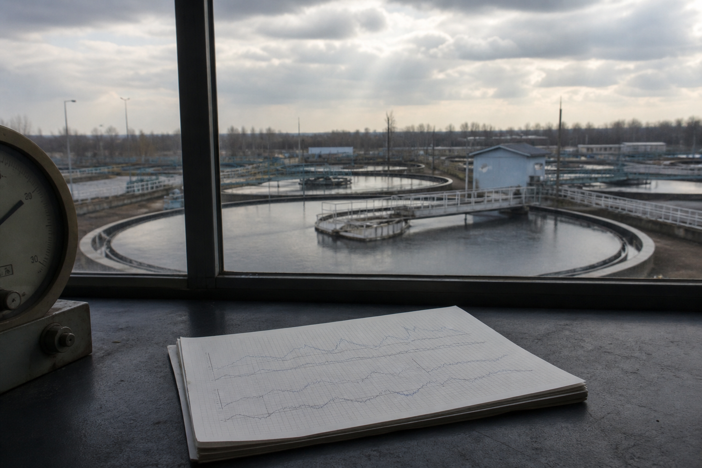

02 · STATEMENT
AI 降低编码门槛，
没有降低判断门槛。
工艺专家配合成熟 AI 工具，确实可以解决很多问题；我的价值不在于把代码写得更复杂，而在于在工艺问题和算法选择之间做判断。面对一个预测任务，我会先定义问题、时间尺度与可用数据，再验证模型是否泄漏、能否跨工况稳定，并追问结果如何进入业务流程。
AI 编程工具能加快实现，却不能替代这些决策：如果问题定义错了，它只会更快地把错误方案实现出来。
工艺专家配合成熟 AI 工具，确实可以解决很多问题；我的价值不在于把代码写得更复杂，而在于在工艺问题和算法选择之间做判断。面对一个预测任务，我会先定义问题、时间尺度与可用数据，再验证模型是否泄漏、能否跨工况稳定，并追问结果如何进入业务流程。
AI 编程工具能加快实现，却不能替代这些决策：如果问题定义错了，它只会更快地把错误方案实现出来。
研究方法的技术判断，不等同于部署结论

我不会因为一个模型“很新”就把它放进水务场景。真正需要回答的，是它是否匹配数据、工艺与业务动作。
先明确预测对象、服务对象与动作窗口：是为了提前识别小时级异常，还是支持日级、周级调度？如果传感器缺失、目标定义不稳定或没有可承接的业务动作，先修问题，不急着训练。
小规模日尺度序列并不天然适合深度网络。Ridge、随机森林或 XGBoost 等强基线，往往更容易验证稳定性；只有连续记录、有效特征和长序列上下文足够时，才进一步比较 DLinear、PatchTST、iTransformer 等序列模型。
时间序列最常见的错误不是参数，而是泄漏：特征时间戳不能晚于预测起点；填补、标准化、特征选择和调参都只在训练折中拟合。按时间扩展窗口验证，外部留出集只用于最后一次复核。
一次好看的分数不等于泛化。还要看季节、负荷、异常工况与漂移下的误差；当残差确有结构，再考虑 STL、VMD、残差学习或更长上下文，而不是默认叠加复杂模块。
点预测只是开始。要说明数据版本、训练窗口、回退基线与漂移触发器；预测区间和预警阈值也需要独立校准。最终仍由工艺人员结合现场确认，而不是让模型替代决策。
我的论文工作围绕不同时间尺度与模型复杂度展开。共同点不是追逐某一个网络，而是把基线、时间切分、残差诊断和工程使用边界一起放进评价。
针对全规模污水厂的连续进水记录，比较从线性基线到深度时序模型的路线，重点检查滚动评估与预测不确定性，而不是只看单次测试得分。
用灰箱思路处理趋势与扰动，观察不同预测步长的取舍：越往中长期，越需要把结果解释为调度参考，而不是承诺一个不受工况影响的精确数值。
当序列呈现多尺度波动时，先用 ACF 与 FFT 做残差诊断，再比较分解、传统模型与深度序列模型的角色；复杂结构要由证据触发，而不是成为默认答案。
变量是否在预测时真实可得、特征时间戳是否晚于起点、任何预处理是否仅在训练折拟合，都需要在建模前完成审计。
基线、每折结果、留出集结果与失败记录都应保留。无法超过强基线时，应回到数据、目标和特征问题，而不是继续堆复杂模型。
跨时间、跨水厂、漂移和预警是不同层级的问题。没有独立校准和足够证据，就不把区间或预警写成部署能力。